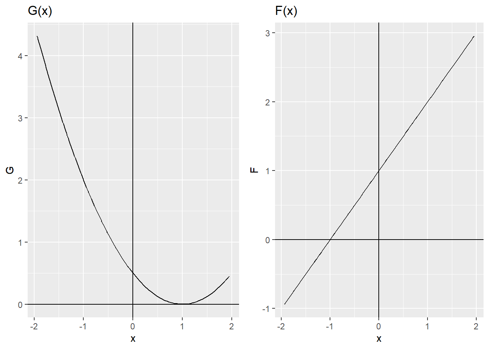
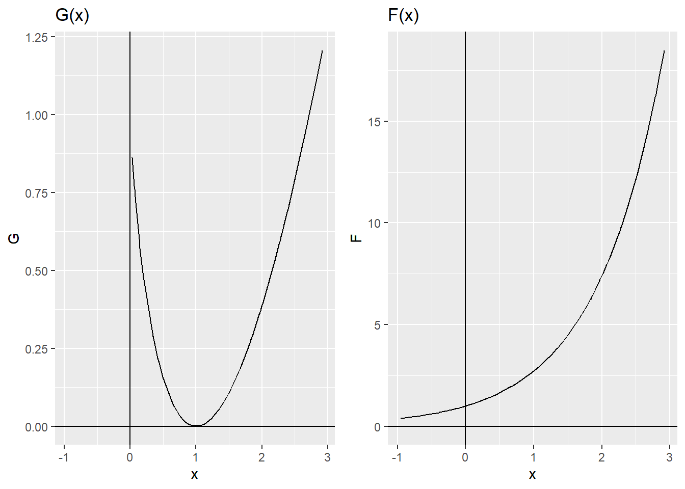
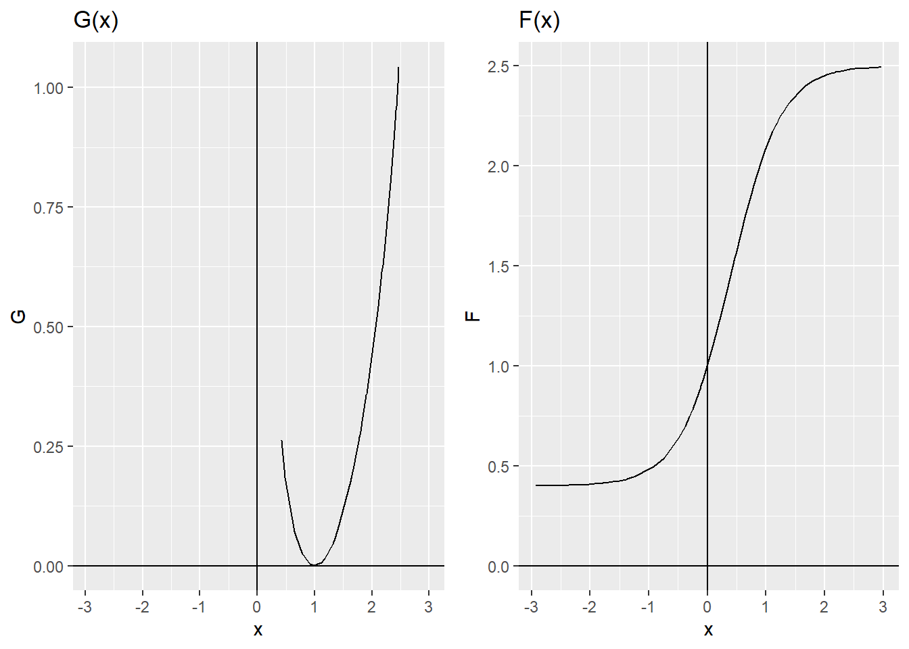
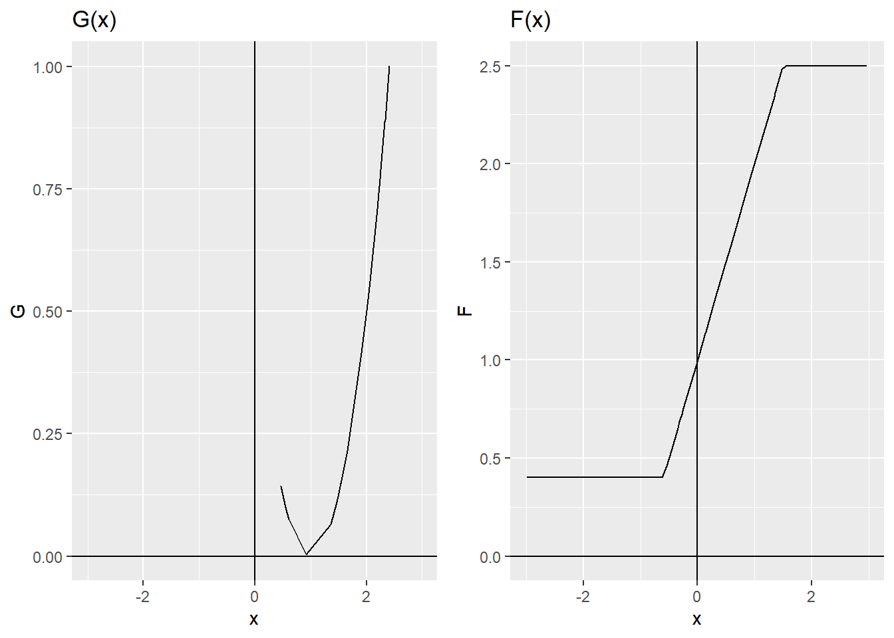
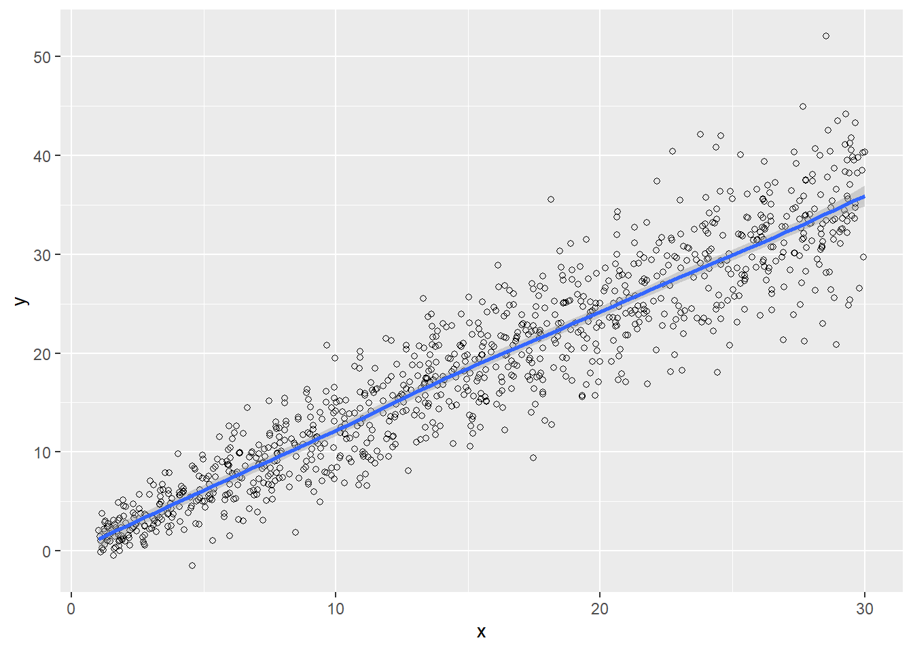
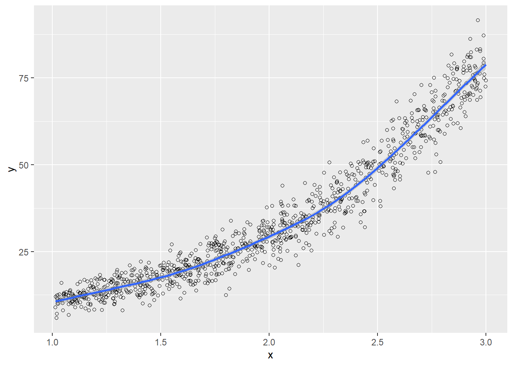

Calibration [as a process] has become an important methodological instrument in the production of large volumes of statistics. Most statistical agencies have developed software specifically designed to calculate the resulting weights, usually calibrated to auxiliary information available in administrative records and other accurate sources. Särndal (2007)
The calibration process is the main topic of the most recent articles published on estimation in finite populations and sampling. This phenomenon arises because calibration provides a systematic way to incorporate auxiliary information at the estimation stage of a survey. A calibration estimator is a linear estimator with the desirable property of representativeness under any sampling design. Although the term calibration is new, some authors agree that they have used calibration for a long time, before knowing this process by that name.
As Särndal (2007) states, the most important item in calibration, as a systematic estimation process, is the existence of auxiliary information. If there is no auxiliary information, there is nothing to calibrate to, and therefore there will be no calibration estimators to apply. As will be seen throughout the chapter, general regression estimators can yield the same results as calibration estimators; however, the spirit and essence of their application move in markedly different directions.
But what is a calibration estimator? What is its essence? Below is a brief description of this method: 1. Suppose that an auxiliary information vector \(\mathbf{x}_k=(x_{1k}, x_{2k},\ldots,x_{pk})\) of \(p\) auxiliary variables is available and known for the individuals selected in the sample. 1. In addition, from administrative records or other reliable sources, the total of the auxiliary information vector \(\mathbf{t_X}=\sum_{k\in U}\mathbf{x}_k\) is known. 1. The purpose of the study is to estimate the total of the characteristic of interest using the information given by \(\mathbf{x}_k \ \ \ k\in S\). 1. Although the Horvitz-Thompson estimator is unbiased, the estimates are required to satisfy the following restriction: \[
\sum_{k\in S}w_k\mathbf{x}_k = \mathbf{t_X}
\] which is known as the calibration equation. 1. The idea is to seek these weights \(w_k\) as close as possible to the inverse of the inclusion probability of the \(k\)-th element, \(d_k=1/\pi_k\).
Although the concept of calibration is new in sampling theory, the essence of the method and the practical spirit of obtaining estimates that match known totals exactly are not new. In fact, this method has been used, and some researchers are still using it, without knowing that it is called calibration. This was the case of Deming and Stephan (1940), who approached this topic using contingency tables with internal estimates and known marginal totals. They were the pioneers of the iterative proportional fitting procedure, or IPFP.
10.1 IPFP
Suppose that there are two qualitative variables that divide the population into population subgroups. On the one hand, one variable divides the population into \(H\) population subgroups, \(U_{1 \cdot},\ldots,U_{h \cdot}, \ldots, U_{H \cdot}\); on the other hand, another variable divides the population into \(G\) population subgroups, \(U_{\cdot1},\ldots,U_{\cdot g}, \ldots, U_{\cdot G}\). As a result, the population is partitioned into \(H\times G\) population subgroups, as shown in the following table.
Table 10.1: Population distribution in the contingency table.
\(U_{11}\)
\(\cdots\)
\(U_{1g}\)
\(\cdots\)
\(U_{1G}\)
\(U_{1 \cdot}\)
\(\vdots\)
\(\vdots\)
\(\vdots\)
\(\vdots\)
\(U_{h1}\)
\(\cdots\)
\(U_{hg}\)
\(\cdots\)
\(U_{hG}\)
\(U_{h \cdot}\)
\(\vdots\)
\(\vdots\)
\(\vdots\)
\(\vdots\)
\(U_{H1}\)
\(\cdots\)
\(U_{Hg}\)
\(\cdots\)
\(U_{HG}\)
\(U_{H \cdot}\)
\(U_{\cdot 1}\)
\(\cdots\)
\(U_{\cdot g}\)
\(\cdots\)
\(U_{\cdot G}\)
\(U\)
The sizes of the population subgroups are defined as follows: \(N_{hg}=\#U_{hg}\), \(N_{h\cdot}=\#U_{h\cdot}\), \(N_{\cdot g}=\#U_{\cdot g}\). Note that
In addition, the cell totals of the contingency table follow the following relationship:
Table 10.2: Distribution of population sizes in the contingency table.
\(N_{11}\)
\(\cdots\)
\(N_{1g}\)
\(\cdots\)
\(N_{1G}\)
\(N_{1 \cdot}\)
\(\vdots\)
\(\vdots\)
\(\vdots\)
\(\vdots\)
\(N_{h1}\)
\(\cdots\)
\(N_{hg}\)
\(\cdots\)
\(N_{hG}\)
\(N_{h \cdot}\)
\(\vdots\)
\(\vdots\)
\(\vdots\)
\(\vdots\)
\(N_{H1}\)
\(\cdots\)
\(N_{Hg}\)
\(\cdots\)
\(N_{HG}\)
\(N_{H \cdot}\)
\(N_{\cdot 1}\)
\(\cdots\)
\(N_{\cdot g}\)
\(\cdots\)
\(N_{\cdot G}\)
\(N\)
After data collection and observation in the survey, the final estimate of the totals for each internal cell and marginal cell is available. Thus, \(\hat{N}_{hg}\) corresponds to the estimate of \(N_{hg}\), \(\hat{N}_{h\cdot}\) corresponds to the estimate of \(N_{h\cdot}\), \(N_{\cdot g}\) corresponds to the estimate of \(N_{\cdot g}\), and finally \(\hat{N}\) corresponds to the estimate of \(N\). In this way, it is possible to use the Horvitz-Thompson estimator by defining
Using the Horvitz-Thompson estimator guarantees unbiasedness, and the relationship given in the following table is obtained.
Table 10.3: Distribution of estimated population sizes in the contingency table.
\(\hat{N}_{11}\)
\(\cdots\)
\(\hat{N}_{1g}\)
\(\cdots\)
\(\hat{N}_{1G}\)
\(\hat{N}_{1 \cdot}\)
\(\vdots\)
\(\vdots\)
\(\vdots\)
\(\vdots\)
\(\hat{N}_{h1}\)
\(\cdots\)
\(\hat{N}_{hg}\)
\(\cdots\)
\(\hat{N}_{hG}\)
\(\hat{N}_{h \cdot}\)
\(\vdots\)
\(\vdots\)
\(\vdots\)
\(\vdots\)
\(\hat{N}_{H1}\)
\(\cdots\)
\(\hat{N}_{Hg}\)
\(\cdots\)
\(\hat{N}_{HG}\)
\(\hat{N}_{H \cdot}\)
\(\hat{N}_{\cdot 1}\)
\(\cdots\)
\(\hat{N}_{\cdot g}\)
\(\cdots\)
\(\hat{N}_{\cdot G}\)
\(\hat{N}\)
Up to this point, the objective of estimating the internal and marginal cells of the contingency table has been met. However, suppose that, because of administrative records or other reliable sources, it is possible to access the marginal cell totals by both columns and rows. That is, suppose that \(N_{\cdot g}\), \(g=1,\ldots,G\), and \(N_{h \cdot}\), \(g=1,\ldots,G\), are known.
Under the preceding assumption, it is possible to construct an algorithm that adjusts the estimates of the internal cells and has the desirable property that, once the algorithm is finished, the row and column sums of the estimates correspond to the known marginal cell totals. This estimation method, based on a very simple algorithm, is known as the iterative proportional fitting procedure, or IPFP, and was proposed by Deming and Stephan (1940).
10.1.1 Algorithm
Although simple and intuitive, the following algorithm is very powerful and has the useful property of converging very quickly if the contingency table has no null values in its internal cells and if the known marginal totals are consistent with the survey implementation.
At first glance, a significant drawback of this method is that it does not take into account the sampling design from which the data used to calibrate to the known auxiliary information arise. However, as will be seen in the following sections, Deville and Särndal (1992) and Deville et al. (1993) proved that the iterative proportional fitting procedure can indeed be treated as a special case of calibration estimators under the spirit of item 5 in the introduction. The calibration estimators that arise under this frame of reference are known as generalized raking estimators.
10.1.2 Marco y Lucy
Returning to our population of firms in the industrial sector, the qualitative variables Level and SPAM are known to form a partition of the population. On the one hand, the variable Level divides the population into three subgroups according to firm characteristics: Large, Medium, and Small. On the other hand, the variable SPAM divides the population into two population subgroups according to advertising strategies, namely spam_yes and spam_no. In total, the population is divided into \(2\times 3= 6\) population subgroups.
Now suppose that a simple random sampling design with sample size \(n=400\) has been planned, and that we wish to estimate the total number of firms by industrial group, the total number of firms that use and do not use SPAM, and their corresponding internal nesting in the contingency table, as shown in the following table.
Table 10.4: Contingency table for SPAM.
spam_no
spam_yes
Total
Large
\(N_{11}\)
\(N_{12}\)
\(N_{1 \cdot}\)
Medium
\(N_{21}\)
\(N_{22}\)
\(N_{2 \cdot}\)
Small
\(N_{31}\)
\(N_{32}\)
\(N_{3 \cdot}\)
Total
\(N_{\cdot 1}\)
\(N_{\cdot 2}\)
\(N\)
First, with the help of the S.SI function from the\ TeachingSampling package, a probability sample of size \(n=2000\) must be selected.
ID Ubication Level Zone Income Employees Taxes SPAM ISO
14 AB0000000014 C0189067K0112830 Small County1 330 23 4.0 yes no
32 AB0000000032 C0036536K0265361 Small County1 380 18 6.0 yes no
83 AB0000000083 C0206936K0094961 Small County1 260 84 2.0 yes no
84 AB0000000084 C0224613K0077284 Small County1 481 65 10.5 yes no
119 AB0000000119 C0113018K0188879 Small County1 84 81 0.5 yes no
196 AB0000000196 C0245792K0056105 Small County1 108 66 0.5 yes no
Years Segments
14 35 County1 2
32 48 County1 4
83 33 County1 9
84 17 County1 9
119 26 County1 12
196 22 County1 20
Once the information from each firm selected in the sample has been observed and collected, the Domains function from the TeachingSampling package is used to obtain two matrices, spam_no and spam_yes, indicating whether each firm selected in the sample belongs to each of the three levels of the industrial sector.
The first five elements of the two created matrices are shown below.
head(spam_no)
Big Medium Small
1 0 0 0
2 0 0 0
3 0 0 0
4 0 0 0
5 0 0 0
6 0 0 0
head(spam_yes)
Big Medium Small
1 0 0 1
2 0 0 1
3 0 0 1
4 0 0 1
5 0 0 1
6 0 0 1
To estimate the marginal totals corresponding to the variables Level and SPAM, we use the E.SI function from the TeachingSampling package, applied to the objects target_variables and domains created in the previous step.
E.SI(N, n, target_variables)
N Big Medium Small
Estimation 85296 3113 26100.6 56082.1
Standard Error 0 354 868.8 894.6
CVE 0 11 3.3 1.6
DEFF NaN 1 1.0 1.0
E.SI(N, n, domains)
N no yes
Estimation 85296 32455.1 52840.9
Standard Error 0 915.3 915.3
CVE 0 2.8 1.7
DEFF NaN 1.0 1.0
To estimate the internal cells of the contingency table, we use the E.SI function from the TeachingSampling package, applied to the matrices spam_no and spam_yes created earlier.
E.SI(N, n, spam_no)
N Big Medium Small
Estimation 85296 1066 9297.3 22091.7
Standard Error 0 209 587.5 825.9
CVE 0 20 6.3 3.7
DEFF NaN 1 1.0 1.0
E.SI(N, n, spam_yes)
N Big Medium Small
Estimation 85296 2047 16803.3 33990.5
Standard Error 0 289 749.8 923.0
CVE 0 14 4.5 2.7
DEFF NaN 1 1.0 1.0
Therefore, the Horvitz-Thompson estimate under simple random sampling is given by table 10.5. Now suppose that, because of administrative records or other reliable sources, the marginal totals for Level and SPAM are known: 2905 large firms, 25795 medium firms, and 56596 small firms for the variable Level, and 33355 firms that do not use SPAM and 51941 firms that do use SPAM for the variable SPAM. It is then possible to use the iterative proportional fitting procedure to calibrate the internal estimates of the contingency table so that they match the known population values exactly. The first step is to create the contingency table in R.
t1 <-as.matrix(E.SI(N, n, spam_no)[1, 2:4])t2 <-as.matrix(E.SI(N, n, spam_yes)[1, 2:4])Tab <-data.frame(spam_no = t1, spam_yes = t2)colnames(Tab) <-c("spam_no", "spam_yes")
Table 10.5: Horvitz-Thompson estimate for the SPAM contingency table.
spam_no
spam_yes
Big
1066
2047
Medium
9297
16803
Small
22092
33990
Once the contingency table has been created, we implement the algorithm using the IPFP function from the TeachingSampling package. This function has four arguments. The first argument is Tab, which refers to the contingency table resulting from estimation under the probability design. The second argument is Col, a vector containing the marginal totals, known population values, of the columns of the contingency table. The third argument is Row, a vector containing the marginal totals, known population values, of the rows of the contingency table. Finally, tol, which by default is 0.00001, corresponds to the algorithm tolerance. The IPFP function returns a contingency table calibrated according to the arguments Col and Tol. For this particular example, the following output is obtained:
Col <-table(BigLucy$SPAM)Row <-table(BigLucy$Level)CalIPFP <-IPFP(Tab, Col, Row, tol =0.00001)colnames(CalIPFP)[1:2] <-c("spam_no", "spam_yes")CalIPFP
spam_no spam_yes Row.est
Big 1024 1881 2905
Medium 9447 16348 25795
Small 22884 33712 56596
Col.est 33355 51941 85296
The following are the comparative tables of the calibrated estimates obtained through the iterative proportional fitting procedure and the corresponding information for the population totals, respectively.
Table 10.7: IPFP calibration estimate for the SPAM contingency table.
spam_no
spam_yes
Row.est
Big
1024
1882
2905
Medium
9447
16348
25795
Small
22884
33712
56596
Col.est
33355
51941
85296
Note that the relative difference is very small and that the estimates are close to the truth. In these relative terms, this estimate is better than the one induced by the Horvitz-Thompson estimator.
10.2 Theoretical foundations
As established in the previous section, statisticians have tried to use the incorporation of auxiliary information to improve survey estimates. Thus, the regression estimator in all its possible forms requires knowledge of the total of a vector of auxiliary variables. As Deville and Särndal (1992) explain, calibration estimators are a family or class of estimators with a very attractive form, characterized by using calibrated weights that are as close as possible to the original weights or inverses of the inclusion probabilities of the elements selected in the sample; in addition, these calibration estimators respect a set of restrictions, the calibration equations.
Consider a finite population \(U=\{1,\ldots, k, \ldots, N\}\) from which a probability sample \(s\)\((s\subseteq U)\) has been selected, induced by a sampling design \(p(\cdot)\). Then \(p(s)\) is the probability that sample \(s\) was selected. First- and second-order inclusion probabilities are assumed to be strictly positive.
Let \(y_k\) be the value of the characteristic of interest for the \(k\)-th individual in the population, which also has an associated vector of auxiliary values given by \(\mathbf{x}_k=(x_{1k}, x_{2k},\ldots,x_{pk})\). Note that \(y_k\) and \(\mathbf{x}_k\) are observed and known for all elements in the sample. In addition, it is assumed that the population total of the auxiliary information vector \(\mathbf{t}_{\mathbf{x}}=\sum_{k\in U}\mathbf{x}_k\) is known through administrative records or other reliable sources.
As in most situations presented in this book, the objective is to estimate the population total of the characteristic of interest, \(t_y\). However, the estimator of \(t_y\) must be a linear estimator of the form
\[
\hat{t}_S(y)=\sum_{k\in S}w_ky_k,
\]
Note that the Horvitz-Thompson estimator takes the preceding form because
In addition to linearity, the family of calibration estimators must induce a representative sampling strategy for any sampling design \(p(\cdot)\). That is, new weights \(w_k\) must be constructed so that they are as close as possible to \(d_k=1/\pi_k\) according to some metric, and also satisfy the calibration equations
Since there is a variety of estimators that satisfy restriction (10.2.3), weights \(w_k\) must be found with the following properties (Estevao et al. 2000): 1. Consistency: a system of weights or weightings that satisfies (10.2.3) is attractive because it exactly reproduces the known population total for each auxiliary variable. 1. Closeness to the basic weights: the basic weights \(d_k=1/\pi_k\) have the attractive property of inducing unbiased estimates with respect to the sampling design used. Any deviation from these weights should be small in order to preserve this property, at least approximately or asymptotically. 1. Control over the totals of auxiliary variables: intuition says that the more auxiliary variables used in the calibration process, the better the estimate. This intuitive argument is supported by theory; thus, Estevao et al. (2000) show that the variance of a calibration estimator decreases as more auxiliary variables are taken into account in calibration.
10.3 Construction
To construct these new weights \(w_k\), a pseudo-distance1\(G(w_k/d_k)\) between \(w_k\) and \(d_k\) over the whole sample must be minimized. This can be viewed as an optimization problem for the distance over the whole sample given by
\[
\sum_{k\in S} d_k \frac{G(w_k/d_k)}{q_k}
\]
subject to restriction (10.2.3), where \(q_k\)\((k\in S)\) form a set of known and strictly positive weights. For the pseudo-distance \(G(w_k/d_k)\), it is assumed that
It must be strictly nonnegative, so that it makes sense as a distance function.
It must be strictly convex2, so that any local minimum is an absolute minimum.
\(G(1)=0\); that is, the distance between equal weights is zero.
\(G'(1)=0\); when the weights are equal, the function must have a critical point.
\(G?(1)=1\); that critical point must correspond to the minimizer.
In summary, the calibration technique induces a new set of weights \(w_k\) that arises from minimizing a pseudo-distance \(G(\cdot)\) in the sample, subject to the calibration equations. That is, the new weights must be such that \[
\sum_{k\in S} w_k\mathbf{x}_k=\sum_U\mathbf{x}_k=\mathbf{t_x}
\]
To solve this optimization problem, we use the Lagrange multiplier technique. Thus, the Lagrange equation is given by the following expression:
10.3.1 Distances \(G(\cdot)\), \(g(\cdot)\), and \(F(\cdot)\)
In general, several types of distances can be used in the construction of a calibration estimator. However, Deville and Särndal (1992) show that all of them asymptotically lead to the same estimator. The most commonly used pseudo-distances are given in Table 10.8. Depending on the choice of each distance, different calibration estimators are obtained. It is also possible to fix two constants \(L\) and \(U\) and restrict the range of the resulting weights \(w_k\) to the interval \((L,U)\). This method is used to avoid extreme or negative weights, which can be eliminated through a good choice of \(L\) and \(U\).
In summary, the process for obtaining a calibration estimator is as follows:
Define a distance \(G(\cdot)\) and observe the data \(y_k\) and \(\mathbf{x}_k\).
Solve (10.3.4) for the vector \(\boldsymbol{\lambda}\). In some cases, this solution requires iterative procedures.
Use \(\boldsymbol{\lambda}\) to obtain an estimator of the population total of the characteristic of interest, given by \[
\hat{t}_{y,cal}=\sum_{k\in S}w_ky_k=\sum_{k\in S}d_k F(q_k \boldsymbol{\lambda}' \mathbf{x}_k)y_k
\]
Deville and Särndal (1992) states that the estimator \(\hat{t}_{y,cal}\) will yield estimates close to the unknown population total of the characteristic of interest if there is a strong relationship between \(y\) and \(\mathbf{x}\). In fact, if \(y\) were perfectly explained by \(\mathbf{x}\), the variance of the estimator \(\hat{t}_{y,cal}\) would be zero for every possible sample.
Table 10.8: Examples of pseudo-distances for the calibration process.
Distance
\(G(x)\)
\(g(x)\)
\(F(u)\)
Chi-square
\(\frac{1}{2}(x-1)^2\)
\(x-1\)
\(1+u\)
Entropy
\(x\ln(x)-x+1\)
\(\ln(x)\)
\(\exp(u)\)
Hellingster
\(2(\sqrt{x}-1)^2\)
\(2\left(1-\sqrt{\frac{1}{x}}\right)\)
\((1+\frac{u}{2})^{-2}\)
Inverse entropy
\(\ln(\frac{1}{x})+x-1\)
\(1-\frac{1}{x}\)
\((1+u)^{-1}\)
Inverse chi-square
\(\frac{1}{2}\frac{(x-1)^2}{x}\)
\(\frac{1}{2}\left(1-\frac{1}{x}\right)^2\)
\((1+2u)^{-1/2}\)
10.4 Some particular cases
Deville and Särndal (1992) examined the statistical properties of \(\hat{t}_{y,cal}\) under a series of pseudo-distances \(G(\dot)\). This section reviews some particular cases that yield calibration estimators, some known and others new.
10.4.1 Linear method: chi-square distance
This method, perhaps the most widely used and one of the most important in calibration, is obtained when the chi-square distance is chosen. It calculates, over the whole sample, the distance from the new weights \(w_k\) to the classical weights \(d_k\) as \[
\begin{aligned}
\sum_{S}d_kG(w_k/d_k)=\frac{1}{2}\sum_{S}\frac{(w_k-d_k)^2}{d_k}
\end{aligned}
\]
TipResult
Under the chi-square distance, and assuming that the weights \(q_k=1/c_k\), the calibration estimator takes the form of the general regression estimator.
Proof. From (10.3.3), and using the fact that for this pseudo-distance \(F(u)=1+u\), we have
where \(\mathbf{T}^{-1}\) is defined in (9.2.13). Then,
\[
\begin{aligned}
\hat{t}_{y,cal}&=\sum_{S}w_ky_k\\
&=\sum_s\frac{y_k}{\pi_k}+(\mathbf{t}_{\mathbf{x}}-\hat{\mathbf{t}}_{\mathbf{x}\pi})'\mathbf{T}^{-1}\sum_s\frac{\mathbf{x}_ky_k}{c_k\pi_k}
\end{aligned}
\] which exactly coincides with expression (9.2.15), which defines the general regression estimator.
The author emphasizes that the general regression estimator is a special case of the family of calibration estimators. It is an error to make assertions about calibration estimators based only on the functional form of the general regression estimator (GREG). Although it is true that a large majority of articles are based on the spirit of the general regression estimator, it must be emphasized that the philosophy of a calibration estimator, while not contradicting the use of the general regression estimator, is quite different from its philosophy.

Figure 10.1: Functions \(G(x)\) and \(F(u)\) using the chi-square distance.
Note that the general regression estimator uses a model to incorporate auxiliary information into the estimation process. As with calibration estimators, not all special cases of the general regression estimator are calibration estimators. The most influential spirit of calibration estimators is not to incorporate a model into the estimation process, but to obtain a set of weights \(w_k\). As Särndal (2007) states, the concepts of GREG estimation and calibration estimation reflect a clear difference in thinking. The wide variety of possible models generates a broad family of GREG-type estimators. On the other hand, the choice of a distance in the calibration process generates a broad family of calibration estimators, of which the family of linear GREG estimators is a special case.
TipResult
Under the chi-square distance, assuming that the weights \(q_k=1/x_k\) and that there is only one auxiliary information variable; that is, \(\mathbf{x}_k=x_k\), the calibration estimator takes the form of the ratio estimator.
The preceding system must be solved for \(\boldsymbol{\lambda}\), which is a column vector of Lagrange multipliers. After \(\boldsymbol{\lambda}\) is determined, the calibrated weights are calculated as \(w_k=d_k\exp(q_k \boldsymbol{\lambda}' \mathbf{x}_k)\), and the calibration estimator for the population total of the characteristic of interest is obtained, defined as:
What theoretical and practical interpretation would a negative \(w_k\) have? A very important aspect of this raking method is that it induces weights \(w_k\) that are strictly positive, which does not happen with the linear method.

Figure 10.2: Functions \(G(x)\) and \(F(u)\) using the entropy distance.
10.4.2.1 Computational aspects for calculating \(\boldsymbol{\lambda}\)
To calculate the calibration estimator given by (10.4.7), it is necessary to solve the system of equations (10.4.6) for \(\boldsymbol{\lambda}\). Deville and Särndal (1992) show that a general solution can be obtained using the iterative Newton-Raphson method. Note that the system of calibration equations can be rewritten as a function \(\phi\) in terms of \(\boldsymbol{\lambda}\), as follows:
for some vector \(\boldsymbol{\lambda}\). Then, according to the Newton-Raphson method, a solution would be given by iterating the following expression until convergence:
Note that the procedure converges when the difference between \(\boldsymbol{\lambda}^{(a+1)}\) and \(\boldsymbol{\lambda}^{(a)}\) is smaller than a tolerance fixed in advance. In addition, \(\boldsymbol{\lambda}^{(0)}=\mathbf{0}\) must be taken into account.
TipResult
Under the Newton-Raphson method, the first iteration of the algorithm gives the solution for \(\boldsymbol{\lambda}\) when the chi-square distance is used. That is, \[
\begin{aligned}
\boldsymbol{\lambda}^{(1)}=\hat{\mathbf{T}}^{-1}[\mathbf{t}_{\mathbf{x}}-\mathbf{\hat{t}_{x\pi}}]
\end{aligned}
\]
This section gives the basic ideas for computational programming of a calibration estimator based on the raking method when a single auxiliary information variable is used. Note that the functions \(\phi\) and \(\phi'\) are involved in calculating the vector \(\boldsymbol{\lambda}\), whose expression is given by equation (10.4.8). Computational programming of this calibration estimator technique can be easily implemented in four simple steps:
Program the function \(\phi\).
Program the function \(\phi'\).
Use the preceding expressions to calculate the vector \(\boldsymbol{\lambda}\).
Iterate until convergence.
Four computational objects are involved in programming the function \(\phi\): the vector \(d_k=(1/\pi_1,\ldots,1/\pi_k,\ldots,1/\pi_n)\), the vector \(\boldsymbol{\lambda}\), the vector of auxiliary values for each element included in the sample, given by \(\mathbf{x}_k=(x_{1k}, x_{2k},\ldots,x_{pk})\), and the vector of population totals of the auxiliary information variables \(\mathbf{t}_{\mathbf{x}}\). Thus, the following code creates a function that calculates \(\phi\).
Fi <-function(dk, l, x, tx) { e <-matrix(0, n, 1)for (k in1:n) { e[k] <-exp(x[k] * l) } res <-sum(dk * e * x) - tx res}
On the other hand, only three computational objects are involved in programming the function \(\phi'\), and they were also involved in programming \(\phi\). The reason is that \(\phi'\) is the derivative of \(\phi\). These elements are \(d_k=(1/\pi_1,\ldots,1/\pi_k,\ldots,1/\pi_n)\), \(\boldsymbol{\lambda}\), and \(\mathbf{x}_k=(x_{1k}, x_{2k},\ldots,x_{pk})\). The following code creates a function that calculates \(\phi'\).
Fiprima <-function(dk, l, x) { e <-matrix(0, n, 1)for (k in1:n) { e[k] <-exp(x[k] * l) } res <-sum(dk * e * x * x) res}
At the same time, a function must be created to calculate the calibration estimator. Four computational objects are involved in this function: \(d_k=(1/\pi_1,\ldots,1/\pi_k,\ldots,1/\pi_n)\), \(\boldsymbol{\lambda}\), \(\mathbf{x}_k=(x_{1k}, x_{2k},\ldots,x_{pk})\), and finally the vector of values of the characteristic of interest for the sample elements, \(y_k=(y_1, y_2,\ldots,y_n)\).
Cal <-function(dk, l, x, y) { w <-matrix(0, n, 1)for (k in1:n) { w[k] <-exp(x[k] * l) } res <-sum(dk * w * y) res}
Of course, the preceding code does not work by itself. Note that the previous functions share the computational element \(\boldsymbol{\lambda}\); however, this element does not yet exist and must be calculated with iterative methods such as Newton-Raphson. These functions must be assembled by a function that collects them and is able to carry out the final calculation of the calibration estimator.
First, a desired tolerance must be set; in this case, the tolerance is 0.000001. This means that the iterative process stops when \(|\boldsymbol{\lambda}^{(a+1)}-\boldsymbol{\lambda}^{(a)}| <- 0.000001\). However, if this condition is not satisfied, the process continues iterating. When the process converges, the functions declared earlier can be used to calculate the value of the estimate.
tol <-0.000001l <-0l.k <-4while (abs(l - l.k) > tol) { l.k <- l -Fi(l, xs, sum(xu)) /Fiprima(l, xs) l <- l.k}tcal <-Cal(l.k, xs, ys)
The preceding programming code is intended as a guide for the student and is not presented as the only computational logic alternative.
Note, however, that although the raking method has the feature that the weights are not negative, unlike what often happens when the linear method is used, they can be highly variable. To solve this problem, Deville and Särndal (1992) propose the logistic and truncated linear methods. These techniques are motivated by the desire to restrict the range of variation of the new calibration weights without excessively altering the calibration estimator. In practice, the statistician wants to avoid extreme weights; the following sections show how these can be eliminated.
10.4.3 Logistic method

Figure 10.3: Functions \(G(x)\) and \(F(u)\) using the logistic method with \(L=0.4\) and \(U=2.5\).
Commonly known as the Logit \((L,U)\) calibration method, this method fixes two constants \(L\) and \(U\) such that \(L<1<U\). Thus, the following quantity is defined:
The preceding function takes values restricted to the interval \((L,U)\) because \(F(-\infty)=L\) and \(F(\infty)=U\). Therefore, the new calibration weights are always in the interval \([Ld_k,Ud_k]\).
10.4.4 Truncated linear method
To restrict the interval of calibration-weight solutions, it is possible to use the same linear function but restricted to two values \(L\) and \(U\), such that \(L<1<U\). Thus, \[
G(x)=
\begin{cases}
\frac{1}{2}(x-1)^2 &\text{if $L<x<U$}\\ \\
\infty &\text{otherwise}
\end{cases}
\]
In this way, the corresponding function \(F\) is given by \[
F(u)=
\begin{cases}
1+u &\text{if $u\in [L-1,U-1]$} \\ \\
L &\text{if $u < L-1$} \\ \\
U &\text{if $u > U-1$} \\ \\
\end{cases}
\]
Thus, the new calibration weights are always in the interval \([Ld_k,Ud_k]\).

Figure 10.4: Functions \(G(x)\) and \(F(u)\) using the truncated linear method with \(L=0.4\) and \(U=2.5\).
10.5 Calibration and Post-Stratification
Deville et al. (1993) first derived the calibration estimator and then explained the post-stratification estimator and the raking estimator, under the IPFP algorithm, as special cases of the calibration method under different distances. This section gives the statistical foundations for constructing these estimators.
10.5.1 Post-stratification
A very important special case of calibration estimators is the complete post-stratification estimator3. In this case, the number of auxiliary information variables is equal to the number of post-strata that partition the population. This process assumes a partition of the finite population into \(G\) groups. Thus \(U=(U_1,U_2,\ldots,U_G)\). The characteristic of interest is assumed to be related to \(G\) vectors or dummy variables that take the value one if the element belongs to subgroup \(U_g\)\((g=1,\ldots,G)\) and zero if the element does not belong to the group. Thus \(p=G\), \(\mathbf{x}_k=\mathbf{d}_k=(\underbrace{0,0,\ldots, 1, \ldots,0,0}_{G` groups`})'\), and \(q_k=1\) for all \(k\in U\).
Under the preceding formulation, the vector \(\lambda\) takes the following form:
Proof. The construction of the calibration estimator for this particular scheme is as follows. First, note that if the \(k\)-th element belongs to subgroup \(U_g\), then
which is equivalent to the post-stratification estimator.
10.5.2 Raking
If Deming had known about calibration estimators when the multiplicative distance is used as a frame of reference, he would have been very pleased to see that his method could be generalized and included in statistical science. At first, IPFP was used in a fully pragmatic way: it was simply a matter of making an adjustment so that the internal estimates of the contingency table calibrated to the known totals. Under this frame of reference, IPFP was criticized for being a mathematical rather than statistical method, whose results did not take into account the sampling design used to collect the information. As will be seen in this section, the calibration estimator aimed at estimating internal cells in contingency tables is equivalent to the result of the IPFP method. In fact, the IPFP method is a special case of this scenario, known as raking.
As a particular case, consider the estimation of a two-way contingency table with calibration on the marginal totals. Therefore, the population partition follows the pattern in the following table.
Table 10.9: Population partition.
\(U_{11}\)
\(\cdots\)
\(U_{1g}\)
\(\cdots\)
\(U_{1G}\)
\(U_{1 \cdot}\)
\(\vdots\)
\(\vdots\)
\(\vdots\)
\(\vdots\)
\(U_{h1}\)
\(\cdots\)
\(U_{hg}\)
\(\cdots\)
\(U_{hG}\)
\(U_{h \cdot}\)
\(\vdots\)
\(\vdots\)
\(\vdots\)
\(\vdots\)
\(U_{H1}\)
\(\cdots\)
\(U_{Hg}\)
\(\cdots\)
\(U_{HG}\)
\(U_{H \cdot}\)
\(U_{\cdot 1}\)
\(\cdots\)
\(U_{\cdot g}\)
\(\cdots\)
\(U_{\cdot G}\)
\(U\)
Assume that \(q_k=1\) for all \(k\in U\) and \(\mathbf{x}_k=(\mathbf{d}_{1k}',\mathbf{d}_{1k}')\), where \(\mathbf{d}_{1k}\) is a vector of \(H\) dummy variables denoting which post-stratum the \(k\)-th element belongs to, and \(\mathbf{d}_{2k}\) is a vector of \(G\) dummy variables denoting which post-stratum the \(k\)-th element belongs to. Note that
Let \(\mathbf{u}=(u_1,\ldots,u_H)'\) be a vector of order \(H\) and \(\mathbf{v}=(v_1,\ldots,v_G)'\) a vector of order \(G\). Defining \(\boldsymbol{\lambda}'=(\mathbf{u}',\mathbf{v}')\), if the \(k\)-th element belongs to cell \(U_{hg}\), then
and the new calibrated weights are \(w_k=d_k\exp(u_h+v_g)=d_k\exp(u_h)\exp(v_g)\) if the \(k\)-th element belongs to cell \(U_{hg}\).
10.6 Variance of calibration estimators
We close this chapter with an important property of calibration estimators.
TipResult
The calibration estimator is asymptotically equivalent to the general regression estimator under the following regularity conditions: 1. \(\lim \dfrac{\mathbf{t}_{\mathbf{x}}}{N}\) exists 1. \(\dfrac{\hat{\mathbf{t}}_{\mathbf{x}\pi}-\mathbf{t}_{\mathbf{x}}}{N}\rightarrow \mathbf{0}\) in probability4 1. \(\sqrt{n}\dfrac{\hat{\mathbf{t}}_{\mathbf{x}\pi}-\mathbf{t}_{\mathbf{x}}}{N}\) converges in distribution to the multivariate normal \(N(\mathbf{0},\mathbf{A})\)
Proof. The proof of the preceding result is beyond the scope of this book. However, interested readers may consult Deville and Särndal (1992).
In particular, under the preceding result, the calibration estimator shares the same asymptotic expectations and the same asymptotic variances as the general regression estimator. This can be seen through the following heuristic argument:
It is assumed that for large sample sizes, the Horvitz-Thompson estimator, \(\hat{\mathbf{t}}_{\mathbf{x}\pi}\), is close to the population total of the auxiliary information characteristics, \(\mathbf{t}_{\mathbf{x}}\). This holds because \(\hat{\mathbf{t}}_{\mathbf{x}\pi}\) is a consistent estimator for \(\mathbf{t}_{\mathbf{x}}\).
Then, following equation (10.3.4), the value of \(F(\cdot)\) should be close to one and the value of \(\boldsymbol{\lambda}\) should be close to \(\mathbf{0}\).
However, by the construction of the functions \(F(\cdot)\) and because \(F(0)=F'(0)=1\), all functions \(F(\cdot)\) should behave the same way in a neighborhood of \(0\).
Therefore, all functions \(F(\cdot)\) can be approximated by the function \(F(u)=u+1\).
That is, the same function that corresponds to the general regression estimator.
TipResult
The approximate variance and the variance estimate of the calibration estimator are given by \[
AV(\hat{t}_{y,cal})=\sum\sum_U\Delta_{kl}(d_kE_k)(d_lE_l)
\]\[
\widehat{Var}(\hat{t}_{y,cal})=\sum\sum_S\frac{\Delta_{kl}}{\pi_{kl}}(w_ke_k)(w_le_l)
\] respectively, where \(E_k=y_k-\mathbf{x}_k'\mathbf{B}\) and \(\mathbf{B}\) satisfies the normal equations in the construction of the regression estimator. Also, \(e_k=y_k-\mathbf{x}_k'\hat{\mathbf{B}}\) and \(\hat{\mathbf{B}}\) is an estimator of \(\mathbf{B}\).
10.7 Marco y Lucy
Returning to the practical estimation exercise, suppose that the government wants to obtain an estimate of the total taxes contributed by the industrial sector in the last fiscal year. These estimates must be very precise because part of the national budget will be redesigned based on these results.
On this occasion, the government provides the statistician with a sampling frame that includes the identification and location of all firms belonging to the industrial sector. In addition, the government has knowledge of the population total of two auxiliary information characteristics: the population total of the variable Employees, equal to 151950; the population total of the variable Income, equal to 1035217; and, of course, the population total of the number of firms in the industrial sector, equal to 2396.
Under the preceding scheme, several sampling strategies were planned, using a simple random design of 400 firms and calibration estimators under several distances. The following computational code was used to select this sample.
Once the sample was selected, the R sampling package was used to calculate the calibration estimators. In particular, the calib function was used to calculate the weights \(w_k\) of the calibration estimator. This function has several arguments, including the following: Xs, the matrix containing the values of the auxiliary information characteristics for the individuals included in the sample; d, corresponding to the inverse of the inclusion-probability weights of the sample elements; tx, which corresponds to the population total of the calibration variables; and method, which includes four possible distances: the chi-square distance, whose option in calib is method="linear"; the entropy distance, whose option in calib is method="raking"; and the logistic and truncated methods, whose options in calib are method="logit" and method="truncated", respectively.
Calibration estimates were calculated using the four methods, and the code used is shown below.
library(sampling)tx1 <-sum(BigLucy$Income)tx2 <-sum(BigLucy$Employees)ys <-data.frame(Income, Employees, Taxes)Xs <-cbind(1, Income, Employees)piks <-rep(n / N, times = n)tx <-c(N, tx1, tx2)w1 <-calib(Xs, d =1/ piks, tx, method ="linear")w2 <-calib(Xs, d =1/ piks, tx, method ="raking")w3 <-calib(Xs, d =1/ piks, tx, method ="logit", bounds =c(0.75, 1.2))w4 <-calib(Xs, d =1/ piks, tx, method ="truncated", bounds =c(0.75, 1.2))
The calib function only calculates the weights involved in the calibration equations. To calculate the final estimate of the total of the characteristic of interest Taxes, the relevant quantities must be multiplied. Thus, the following code was used to calculate the four estimates.
tcal1 <-t(w1 / piks) %*%as.matrix(ys)tcal1
Income Employees Taxes
[1,] 36634733 5391992 1002177
tcal2 <-t(w2 / piks) %*%as.matrix(ys)tcal2
Income Employees Taxes
[1,] 36634751 5391994 1002661
tcal3 <-t(w3 / piks) %*%as.matrix(ys)tcal3
Income Employees Taxes
[1,] 36634730 5391992 1002661
tcal4 <-t(w4 / piks) %*%as.matrix(ys)tcal4
Income Employees Taxes
[1,] 36634733 5391992 1002177
10.8 Discussion
Särndal (2007) states that the definition of the calibration approach for estimating totals in finite populations follows these processes:
Calculate new weights that incorporate specific auxiliary information and are restricted by the calibration equation.
Use these new weights to construct linear estimators.
Obtain approximately unbiased estimates in the presence of nonresponse and other nonsampling errors.
At the same time, Särndal (2007) concludes that there are six ideas worth exploring further. The following criteria are those some statisticians have used to emphasize the practical use of calibration estimators:
As a linear weighting method: calibration has an intimate link with practice. The attachment of official statistics agencies to weighting methods is a powerful habit in practice that began with weighting units by the inverse of their inclusion probability and continued with the weights arising from the post-stratification approach. Calibration weights extend these earlier ideas. Calibration is new as a term in sampling, nearly 15 years old, but not new as a technique for producing weights. For example, quota sampling is a form of nonprobability sampling that induces estimates calibrated to the demographic totals of the study population. Weighting the observed values of the characteristics of interest was a very important topic before the term calibration became popular. Some authors derived these weights with the argument that they should differ as little as possible from the original weights. Other authors found the weights by recognizing that a linear regression estimator could be written as a weighted sum of the values of the characteristic of interest. From there arose terms such as sampling weight, regression weight, and case weight.
As a systematic way to use auxiliary information: calibration provides a systematic way to involve auxiliary information. In most practical applications, calibration provides a simple approach to incorporating this information into the estimation stage. Auxiliary information was used to improve the precision of estimates long before the term calibration became popular. Hundreds of articles were written with this purpose in mind. Today, calibration offers a path for incorporating this auxiliary information. For example, calibration can be used effectively in surveys where auxiliary information is available at different levels. In two-stage sampling, auxiliary information may exist for the first-stage units, the clusters, and other information may exist for the second-stage units, elements or clusters.
As an approach to achieving consistency: sometimes the term calibration refers to a way of obtaining consistent estimates5. The calibration equations impose consistency on the vector of weights; thus, when it is applied to the auxiliary variables, the result will be consistent with the totals of these variables. A desire to promote credibility in official statistics is one reason why agencies seek consistency. When the primary motivation for calibration is not agreement with the totals of the auxiliary information but rather reducing variance and bias due to nonresponse, the vector of weights is said to be balanced.
As a reason for transparency and convenience: the calibration approach has gained popularity in real applications because the resulting estimates are easy to interpret and motivate, since they are directly related to the weights induced by the sampling design. Calibration on known totals gives the user a natural and transparent form of estimation. Users who understand sampling weights appreciate the calibration method because it subtly modifies the original weights while also respecting the totals of the auxiliary information and keeping bias negligible. There is another advantage appreciated by users: in most applications, calibration induces a single vector of weights applicable to all variables involved in the study. This last reason makes this method highly valued in official agencies that handle very large surveys.
In combination with other terms: some authors use the word calibration in combination with other terms to describe various lines of thought. Among this proliferation of terms are model calibration, G calibration, harmonized calibration, calibration at a higher level, regression calibration, nonlinear calibration, super-generalized calibration, neural-network model calibration, and calibration based on local polynomial models, among others. Calibration plays a significant role in indirect sampling methods (see Chapter 12). The term has also been used, although in a different spirit, in concepts such as calibrated imputation and biased calibration.
As a new direction of thought: if calibration represents a new approach clearly demarcated from its predecessors, then it is time to ask: Does calibration generalize previous theories? Does calibration provide better answers to important questions than previous estimation approaches? In practice, the statistician encounters details such as nonresponse, sampling frame deficiencies, and measurement errors. It is true that processes such as imputation and reweighting for nonresponse are widely disseminated and used in practice. However, there remains an unsatisfying feeling when using these methods because they are not framed within an exhaustive theory of inference in finite populations. Most theoretical articles deal with parameter estimation under an ideal world, which does not exist in practice, where nonresponse and other nonsampling errors are absent.
10.9 Optimal calibration estimators
As Wu (2003) states, there are two variants in the construction of a calibration estimator: one is given by the choice of distance and the other by the set of calibration equations6. In areas such as demography, it is customary to calibrate on many variables in order to estimate the known totals of the auxiliary variables with zero variance, regardless of whether the resulting estimator may lose efficiency. In these terms, it would be better to use the fewest possible calibration equations so as not to spoil the good behavior of the estimator. The question the researcher must ask is: what is the best calibration equation to use in constructing an estimator of this type?
If \(u_k=u(\mathbf{x}_k)\), where \(u(\cdot)\) is a real-valued function, then a new way to construct a calibration estimator is given by obtaining weights \(w_k\) restricted7 to \[
\sum_{k\in S}w_ku(\mathbf{x}_k)=\sum_{k\in U}u(\mathbf{x}_k)
\tag{10.1}\] Therefore, the question becomes clearer: which function \(u(\cdot)\) makes the estimator \(\hat{t}_{ycal}\) more efficient? It is well known that under sampling-design-based inference, there is no uniformly minimum-variance unbiased estimator (Cassel et al. 1976). However, it is possible to obtain an optimal estimator under inference assisted by superpopulation models. The answer to these questions is given by the proposal of Wu (2003), who constructed an optimal calibration estimator assuming that the responses \(y_k\) can be viewed as realizations of the following semiparametric superpopulation model: \[
E_\xi(y_k|\mathbf{x}_k)=\mu(\mathbf{x}_k,\boldsymbol{\theta}),\ \ \
Var_\xi(y_k|\mathbf{x}_k)=[\nu(\mathbf{x}_k)]^2\sigma^2 \ \ \ \ \ ,
\tag{10.2}\]
where \(\mu(\cdot\ , \cdot)\) and \(v(\cdot)\) are known functions, and \(\boldsymbol{\theta}\) and \(\sigma^2\) are unknown model parameters. It is assumed that the \(y_k\), \(k\in U\), are conditionally independent given the \(\mathbf{x}_k\). Note that \(\nu\) may be a known function of \(\mu\), as in generalized linear models.
Optimal estimators, assisted by a superpopulation model \(\xi\), that minimize the expected value of the sampling-design-based variance, \(E_\xi(Var_p(\hat{Y}))\), have been discussed8 by many authors. For example, in Isaki and Fuller (1982) this expected variance was called anticipated variance.
Let \(t_{y,C_u}\) be a calibration estimator of the population total of the characteristic of interest, constructed using restriction (equation 10.1), where \(C_u=\left\{ u(\mathbf{x}_1),u(\mathbf{x}_2),\ldots,u(\mathbf{x}_N)\right\}\) is the family of vectors of all possible real-valued functions applied to the auxiliary information. Within the class of calibration estimators \(t_{y,C_u}\), the choice of \[
C_{\mu}=\left\{\mu(\mathbf{x}_1,\boldsymbol{\theta}),\mu(\mathbf{x}_2,\boldsymbol{\theta}),\ldots,\mu(\mathbf{x}_N,\boldsymbol{\theta})\right\}
\] minimizes \(E_\xi(Var_p(\hat{Y}))\) under the superpopulation model given by (equation 10.2) and assuming regularity conditions in the sampling design.
With this result, we can proceed to the construction of the optimal calibration estimator resulting from minimizing chi-square subject to the following restriction: \[
\sum_{k\in S}w_k\hat{\mu}_k=\sum_{k\in U}\hat{\mu}_k
\]
where \(\hat{\mu}_k=\mu(\mathbf{x}_k,\hat{\boldsymbol{\theta}})\). The reason is that the values of the vector \(\boldsymbol{\theta}\) are unknown and must be replaced by an estimator based on the selected sample, given by \(\hat{\boldsymbol{\theta}}\). The minimization is carried out using a Lagrange multiplier, as in Deville (1999). In this way, it is very easy to obtain the expression of the optimal calibration estimator, which is given by (Wu and Sitter 2001)\[
\begin{aligned}
\hat{t}_{y,opt}&=\sum_{k\in S}w_ky_k\\
&=\hat{t}_{y\pi}+(t_{\hat{\mu}}-\hat{t}_{\hat{\mu}\pi}){\hat{B}_y}
\end{aligned}
\]
where \(t_{\hat{\mu}}=\sum_{k\in U}\hat{\mu}_k\) is the population total of the functions \(\hat{\mu}\), and \(\hat{t}_{\hat{\mu}\pi}\) is its corresponding Horvitz-Thompson estimator, with \[
\hat{B}_y=\frac{\sum_{k\in S}d_kq_k\hat{\mu}_ky_k}{\sum_{k\in S}d_kq_k\hat{\mu}_k^2}
\]
In summary, optimal calibration estimators have been studied in depth in Wu and Sitter (2001) and Wu (2003), and their foundation lies in model-assisted inference. To motivate the optimality conditions, a general semiparametric superpopulation model given by (equation 10.2) was used. These calibration estimators for the population total of the characteristic of interest have the following characteristics: 1. A chi-square distance whose weight factors satisfy \(q_k>0\) and are also such that \(N^{-1}\sum_{k=1}^N q_k^2=O(1)\). 1. A single restriction, given by a dimension reduction \(u_k=\mu(\mathbf{x}_k,\boldsymbol{\theta})\), where the functional form \(\mu(\cdot\ ,\cdot)\) may be arbitrary.
Some of the most important results of this method can be summarized as follows (Wu 2003):
Let \(\hat{\boldsymbol{\theta}}=(\sum_{k\in S}d_kq_k\mathbf{x}_k\mathbf{x}_k')^{-1} \sum_{k\in S}d_kq_k\mathbf{x}_ky_k\). If \(u_k=\mathbf{x}_k'\boldsymbol{\theta}\) is used as the calibration variable, the resulting calibration estimator is identical to the conventional calibration estimator given by \(\hat{t}_{ycal}\). Therefore, the class of estimators resulting from this method is very general because it includes the original estimator as a special case.
For any consistent estimator of \(\boldsymbol{\theta}\) such that \(\hat{\boldsymbol{\theta}}=\boldsymbol{\theta} + o_p(1)\), if \(\boldsymbol{\theta}\) is replaced by \(\hat{\boldsymbol{\theta}}\) in the calibration equations, the resulting calibration estimator does not change asymptotically.
Optimal calibration estimators obtained using \(u_k=E_\xi(y_k \mid \mathbf{x}_k)=\mu(\mathbf{x}_i,\boldsymbol{\theta})\) are optimal under the minimum expected variance criterion.
Optimal calibration estimators are optimal under the superpopulation model \(\xi\), but even if the considered model is incorrectly specified, these estimators remain consistent.
Since there is no uniformly minimum-variance unbiased estimator, the only choice of \(u(\cdot)\) that makes \(\hat{t}_{yopt}\) an estimator with the preceding characteristics is \(u(\mathbf{x}_k)=y_i\), which is of course practically useless. Therefore, one should make \(u(\mathbf{x}_k)\approx y_k\).
The reader should note that the structure of the model \(\xi\) given by (equation 10.2) is very general and includes two important cases. The first is the linear or nonlinear regression model given by \[
y_k=\mu(\mathbf{x}_k,\boldsymbol{\theta})+\nu_k\varepsilon_k
\]
where the \(\varepsilon_k\) are independent and identically distributed random variables with \(E_\xi(\varepsilon_k)=0\), \(Var_\xi(\varepsilon_k)=\sigma^{2}\), and \(\nu_k=\nu(\mathbf{x}_k)\) is a known and strictly positive function.
The second case refers to the generalized linear model given by \[
g(\mu_i)=\mathbf{x}'_k\boldsymbol{\theta}, \ \ \ Var_\xi(y_k|\mathbf{x}_k)=\nu(\mu_k)
\tag{10.3}\]
where \(\mu_k=E_\xi(y_k|\mathbf{x}_k)\), \(g(\cdot)\) is a link function, and \(\nu(\cdot)\) is a variance function.
The behavior of optimal calibration estimators under a linear model and a log-linear model is described below.

Figure 10.5: Linear behavior of the characteristic of interest explained by the auxiliary information.
If the auxiliary information explains the characteristic of interest linearly, as observed in Figure 10.5, then the argument expressed in Deville and Särndal (1992) would make sense; motivated by the ratio estimator, they argue that
In the multivariate case, the function that makes the calibration estimator optimal is given by \[
u(\mathbf{x}_k,\boldsymbol{\theta})=\mathbf{x}_k'\boldsymbol{\theta}=\theta_0+\theta_1x_{k1}+...+\theta_Px_{kP}
\]
where \(\boldsymbol{\theta}=(\theta_0,\theta_1,...,\theta_P)\) is estimated through weighted least squares, as in multiple regression. Therefore, the characteristic of interest follows the following superpopulation model:
where the \(\varepsilon_k\) are independent and identically distributed with \(E_\xi(\varepsilon_k)=0\) and \(Var_\xi(\varepsilon_k)=\sigma^{2}\), and \(\nu_k=\nu(\mathbf{x}_k)=1\). Therefore, when estimating \(\boldsymbol{\theta}\) using the least squares technique, we have \[
\begin{aligned}
\hat{\boldsymbol{\theta}}&=\left(\sum_{k\in S}q_kd_k\mathbf{x}_k\mathbf{x}_k'\right)^{-1}\sum_{k\in S}q_kd_k\mathbf{x}_ky_k\\
&=(\mathbf{X}'\mathbf{V}^{-1}\mathbf{X})^{-1}\mathbf{X}'\mathbf{V}^{-1}\mathbf{y}
\end{aligned}
\]
where \(\mathbf{V}=diag(d_1q_1,\ldots,d_nq_n)=\frac{1}{\sigma^2}diag(d_1,\ldots,d_n)\).
TipResult
In this way, the calibration estimator of the population total resulting from the preceding superpopulation model is given by \[
\hat{t}_{y,opt}=t_{y\pi}+(\mathbf{t}_{\mathbf{x}}-\hat{\mathbf{t}}_{\mathbf{x}\pi})'\hat{\boldsymbol{\theta}}
\]
Proof.\[
\begin{aligned}
\hat{t}_{y,opt}&=\hat{t}_{y\pi}+(t_{\hat{\mu}}-\hat{t}_{\hat{\mu}\pi}){\hat{B}_y}\\
&=\hat{t}_{y\pi}+(\sum_{k\in U}\hat{\mu_k}-\sum_{k\in U}d_k\hat{\mu}_k){\hat{B}_y}\\
&=\hat{t}_{y\pi}+(\sum_{k\in U}\mathbf{x}_k'\hat{\boldsymbol{\theta}}-\sum_{k\in U}d_k\mathbf{x}_k'\hat{\boldsymbol{\theta}}){\hat{B}_y}\\
&=\hat{t}_{y\pi}+(\sum_{k\in U}\mathbf{x}_k'-\sum_{k\in U}d_k\mathbf{x}_k')\hat{\boldsymbol{\theta}}{\hat{B}_y}\\
&=\hat{t}_{y\pi}+(\sum_{k\in U}\mathbf{x}_k-\sum_{k\in U}d_k\mathbf{x}_k)'\hat{\boldsymbol{\theta}}{\hat{B}_y}\\
&=\hat{t}_{y\pi}+(\sum_{k\in U}\mathbf{x}_k-\sum_{k\in U}d_k\mathbf{x}_k)'\hat{\boldsymbol{\theta}}
\end{aligned}
\] because \({\hat{B}_y}=1\). This follows from the definition of \(\hat{B}_y\), taking into account that \[
\hat{\mu}_k=\mathbf{x}_k'\boldsymbol{\theta}=x_k'(\mathbf{X}'\mathbf{V}^{-1}\mathbf{X})^{-1}\mathbf{X}'\mathbf{V}^{-1}\mathbf{y}
\] Therefore, \[
\begin{aligned}
\sum_{k\in S}d_kq_k\hat{\mu}_k^2&=\mathbf{y}'\mathbf{V}^{-1}\mathbf{X}
(\mathbf{X}'\mathbf{V}^{-1}\mathbf{X})^{-1}\mathbf{X}'\mathbf{V}^{-1}\mathbf{X}
(\mathbf{X}'\mathbf{V}^{-1}\mathbf{X})^{-1}\mathbf{X}'\mathbf{V}^{-1}\mathbf{y}\\
&=\mathbf{y}'\mathbf{V}^{-1}\mathbf{X}(\mathbf{X}'\mathbf{V}^{-1}\mathbf{X})^{-1}\mathbf{X}'\mathbf{V}^{-1}\mathbf{y}\\
&=\sum_{k\in S}d_kq_k\hat{\mu}_ky_k
\end{aligned}
\]
Note that the term \(\hat{B}_Y\) is equal to one and therefore disappears, making the optimal calibration estimator identical to the classical calibration estimator given by (10.4.5).
10.9.0.1\(u(\mathbf{x})\) via generalized linear model
What happens if the auxiliary information does not describe the characteristic of interest with linear behavior, as observed in Figure 10.6?

Figure 10.6: Nonlinear behavior of the characteristic of interest explained by the auxiliary information.
This is the most important part of the practical development of optimal calibration estimators. In this regard, the user may pause for a moment on the following questions:
If an auxiliary information characteristic explains the characteristic of interest very well, then calibrating with respect to this auxiliary information would be very convenient. However, this relationship will not always be linear.
If we want perfect estimates, we should use the characteristic of interest itself for calibration, but since this is absurd, we must use \(u(\mathbf{x})\) similar to \(y\).
If it is known that the available auxiliary information does not describe the characteristic of interest linearly, the application of the classical calibration estimators motivated by Deville (1999) is called into question. Therefore, if the values of the characteristic of interest are considered realizations of a superpopulation model \(\xi\) as in (equation 10.2), which can be described through its first and second moments, then the generalized linear model (GLM), described in detail in McCullagh and Nelder (1989) and given by (equation 10.3), is clearly relevant. The main feature of the GLM is that the variance of the characteristic of interest depends on the mean \(\mu_k\). In addition, in the GLM the characteristic of interest is considered to be related to the auxiliary information variables through the mean \(\mu_k\) and a link function \(g(\cdot)\) such that \[
g(\mu_k)=\theta_0+\theta_1x_{k1}+...+\theta_Px_{kP}
\]
Note that the classical linear regression model is a special case of the GLM where \(g(\mu_k)=\mu_k\) and \(V(\mu_k)=1\). Of course, other forms of the variance function exist, and nonlinear links are also allowed. For example, among the most popular link and variance functions are the logarithmic link given by \(g(\mu_k)=\log(\mu_k)\), the Poisson variance function given by \(V(\mu_k)=\mu_k\), and the Gamma variance given by \(V(\mu_k)=\mu_k^2\).
The GLM is a semiparametric method and requires specifications only for the first and second moments. The link function \(\mu_k\) is related to the independent variables, and the variance function describes how the variation in the characteristic of interest is related to the mean.
The coefficients \((\theta_0,\theta_1,...,\theta_k)\) can be estimated, as in our case, using the maximum quasi-likelihood method. In the most general case, the estimator of the vector of population parameters \(\hat{\boldsymbol{\theta}}=(\hat{\theta_0},\hat{\theta_1},...,\hat{\theta_P})'\) is the solution of the following equation: \[
\mathbf{D}'\mathbf{V}^{-1}(\mathbf{y}-\boldsymbol{\mu})=0
\tag{10.4}\] The preceding equation is simply a generalization of the normal equations in a multiple regression model. Here \(\mathbf{y}=(y_1,...,y_n)'\) and \(\boldsymbol{\mu}=(\mu_1,...,\mu_n)'\), \(\mathbf{V}=diag(V(\mu_1),...,V(\mu_n))\) are the mean and variance structures of the model, respectively, and \(\mathbf{D}=\partial\mu/\partial\theta\). The parameters \(\theta_p\), \(p=1,\ldots,P\), are implicit in (equation 10.4). In the simplest case, the classical linear model, we have \(\mu_k=\theta_0+\theta_1x_{k1}+...+\theta_Px_{kP}\), \(\boldsymbol{\mu}=\mathbf{X}'\boldsymbol{\theta}\), and \(\mathbf{D}=\mathbf{X}'\). Then (equation 10.4) becomes \(\mathbf{X}'\mathbf{V}^{-1}\mathbf{X}\boldsymbol{\theta}=\mathbf{X}'\mathbf{V}^{-1}\mathbf{y}\), which corresponds to the normal equations of multiple regression.
On the other hand, in any other model where the link function is different from the identity, the main difficulty in finding the maximum quasi-likelihood estimator of \(\boldsymbol{\theta}\) is that solving (equation 10.4) requires iterative procedures.
TipResult
Under a GLM superpopulation model, the optimal calibration estimator is given by \[
\begin{aligned}
\hat{t}_{y,opt}=\hat{t}_{y\pi}+(t_{\hat{\mu}}-\hat{t}_{\hat{\mu}\pi}){\hat{B}_y}
\end{aligned}
\] with \[
\hat{B}_y=\frac{\sum_{k\in S}d_kq_k\hat{\mu}_ky_k}{\sum_{k\in S}d_kq_k\hat{\mu}_k^2}
\] where \(\hat{\mu}_k=g^{-1}(\mathbf{x}_k'\boldsymbol{\theta})\) and \(g^{-1}(\cdot)\) is the inverse of the link function.
The R statistical software implements the glm function, which allows the GLM parameters to be estimated. Suppose that we want to find the maximum quasi-likelihood estimator of \(\boldsymbol{\theta}=(\theta_0,\theta_1,...,\theta_P)'\) for the model
Note that theta0 is the least squares estimator and serves as the initial estimator for the iterative process. Analogously, it is possible to create custom code to compute estimates of the parameter vector based on McCullagh and Nelder (1989).
Of course, the preceding code should match the output produced by R’s glm procedure.
10.10 Exercises
(Tillé and Ardilly 2006, Exercise 7.1) Using a sampling procedure, the following estimates were obtained for the absolute sizes \(\hat{N}_{ij}\) of two subpopulations of interest:
80
170
150
400
90
80
210
380
10
80
130
220
180
330
490
1000
On the other hand, from official sources, the marginal sizes are known with certainty. The true totals for the rows are \((430, 360, 210)\) and the true totals for the columns are \((150, 300, 550)\).
Adjust the table to the true marginal population totals using the IPFP algorithm.
Adjust the table to the true marginal population totals using the calibration approach with the raking method.
Explain the differences or similarities between the preceding estimates.
(Tillé and Ardilly 2006, Exercise 7.4) Suppose that the following table was obtained and that the true totals for the rows are \((84, 37, 444, 464)\) and the true totals for the columns are \((49, 859, 11, 10)\).
78
6
0
0
84
32
5
0
0
37
0
0
427
17
444
0
0
432
32
464
110
11
859
49
1029
As can be noted, the estimated row totals fully coincide with the true totals. Explain why this table cannot be adjusted using the IPFP algorithm.
Consider an agricultural region consisting of \(N=2010\) farms, for which a simple random sample of farms of size \(n=100\) was selected. In addition, it is known that there are 1580 farms with fewer than 160 hectares (post-stratum 1) and 430 farms with more than 160 hectares (post-stratum 2). The characteristic of interest measured in each farm included in the sample is the cereal-cultivated area on each farm. If the realized sample had \(n_1=70\), \(n_2=30\), \(\bar{y}_1=19.4\), and \(\bar{y}_2=51.63\), estimate, using the calibration technique, the population mean of the cereal-cultivated area in the agricultural region and report the estimated coefficient of variation.
Consider a Poisson sampling design with unequal inclusion probabilities \(\pi_k\), \(k\in U\). Suppose that the population total \(t_y\) is of interest. Construct a calibration estimator using a single auxiliary information characteristic \(x_k=1\) and \(q_k=1\), for all \(k\in U\), using the following pseudo-distance (parameterized by \(\alpha\)):
Obtain the function \(g(x)\) for the three cases of \(\alpha\).
Show that the function \(F(u)\) is fixed and equal to \(N/\hat{N}\).
Deduce the calibration weights.
Obtain the resulting calibration estimator. What form does the resulting estimator have?
Suppose that the information from Exercise 8.7 is the result of a Poisson sampling plan with inclusion probability \(\pi_k=n (x_k/t_x)\). Using the results of the previous exercise and assuming that \(x_k=1\) and \(q_k=1\) for all \(k\in U\), obtain a calibration estimate for the total number of inhabitants in the municipality, the number of automobiles in the municipality, and the number of military personnel in the municipality. Obtain the corresponding estimated coefficients of variation.
Support or refute the following statements.
Calibration estimators induced by the chi-square distance fully coincide with general regression estimators.
The quantity \(q_k\) is constant for all individuals under the entropy distance.
Under the inverse chi-square distance, minimizing the distance with respect to the calibration restrictions always leads to weights \(w_k\) equal to the inverse of the inclusion probability of the \(k\)-th element.
How to cite this book
Gutiérrez, A. (2027). Sampling strategies: Survey design and parameter estimation. Unpublished version online.
Cassel, C. M., C. E. Särndal, and J. Wretman. 1976. Foundations of Inference in Survey Sampling. Wiley.
Deming, W. E., and F. F. Stephan. 1940. “On a Least Squares Adjustment of a Sampled Frequency Table When the Expected Marginal Totals Are Known.”Annals of Mathematical Statistics 11: 427–44.
Deville, J. C., and C. E. Särndal. 1992. “Calibration Estimators in Survey Sampling.”Journal of the American Statistical Association 87: 376–82.
Deville, J-C. 1999. “Variance Estimation for Complex Statistics and Estimators: Linearizaion and Residual Techniques.”Survey Methodology 25: 193–204.
Deville, J-C., C-E. Särndal, and O. Sautory. 1993. “General Raking Procedures in Survey Sampling.”Journal of the American Statistical Association 88: 1013–20.
Estevao, V. M., C-E. Särndal, and O. Sautory. 2000. “A Functional Form Approach to Calibration.”Journal of Official Statistics 16: 379–99.
Isaki, C. T., and W. A. Fuller. 1982. “Survey Design Under the Regression Superpoluation Model.”Journal of the American Statistical Association 77: 89–96.
McCullagh, P., and J. A. Nelder. 1989. Generalized Linear Models. Chapman; Hall.
Särndal, C-E. 2007. “The Calibration Approach in Survey Theory and Practice.”Survey Methodology 33: 99–119.
Tillé, Y., and P. Ardilly. 2006. Sampling Methods: Exercises and Solutions. Springer.
Wu, C. 2003. “Optimal Calibration Estimators in Survey Sampling.”Biometrika 90: 937–51.
Wu, C., and R. R. Sitter. 2001. “A Model-Calibration Approach to Using Complete Auxiliary Information from Survey Data.”Journal of the American Statistical Association 96: 185–93.
A distance function \(D(x_1,x_2)\) must satisfy the following properties: i) be strictly positive (nonnegative), meaning \(D(x_1,x_2)\geq 0\); ii) \(D(x_1,x_2)=0\) only when \(x_1=x_2\); iii) be symmetric, that is, \(D(x_1,x_2)=D(x_2,x_1)\); and satisfy the triangle inequality, that is, \(D(x_1,x_3)\leq D(x_1,x_2)+D(x_2,x_3)\). The function \(G(w_k/d_k)\) is a pseudo-distance because it does not necessarily have to satisfy symmetry.↩︎
A function \(G(x)\) is strictly convex if and only if \(G(ax_1+(1-a)x_2) < aG(x_1)+ (1-a)G(x_2)\) for all \(a\in (0,1)\) and all \(x_1\neq x_2\). On the other hand, if the second derivative of \(G\) is positive over its entire domain, then \(G(x)\) is convex.↩︎
The term complete post-stratification is used when the internal totals of the contingency table are known and are used for the calibration process.↩︎
The frame of reference for this probability measure is given by the sampling design used in the sampling strategy.↩︎
In this section, consistent is used in the sense of consistency with the totals of the auxiliary information.↩︎
Note that if the auxiliary information vector has \(P\) auxiliary variables, then there will be \(P\) calibration equations.↩︎
Under this frame of reference, there is a reduction in the number of restrictions used in calibration.↩︎
The terms \(E_p\) and \(Var_p\) refer to expectation and variance under a sampling design \(p(\cdot)\), and \(E_\xi\) and \(Var_\xi\) denote expectation and variance under a superpopulation model \(\xi\).↩︎